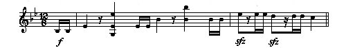
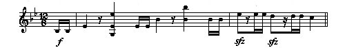

Beethoven's Ninth Symphony Beethoven's Ninth Symphony
Beethoven's Ninth Symphony Beethoven's Ninth SymphonyHome Page Glossary
 


Adagio molto e cantabile (Very slow and singing)
The third movement represents a departure from the struggles of the first two movements; but it does not cancel the need to resolve the conflicts presented so far. However, there are the first hints of the resolution to come in the fourth movement.
Beethoven begins this movement with a variation on the Devotion theme, which will prove to be increasingly important as the symphony continues. In introducing the Devotion theme, Beethoven employs a technique known as diminution in which each melody note is replaced by several notes in smaller values. Beethoven unexpectedly fragments the theme in an interlude started by a clarinet and then imitated by the horn.